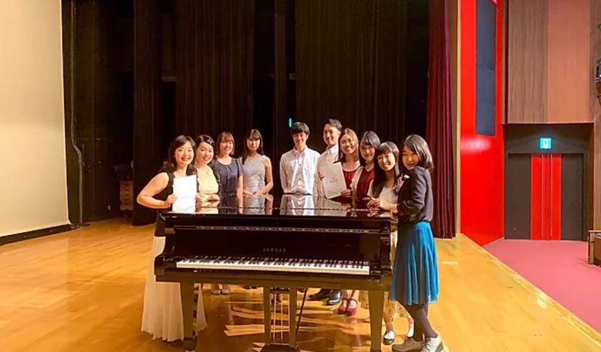
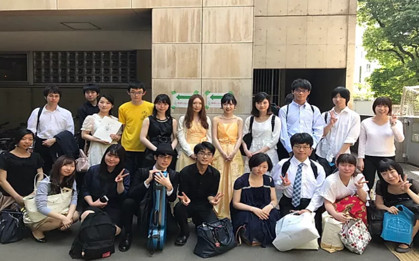
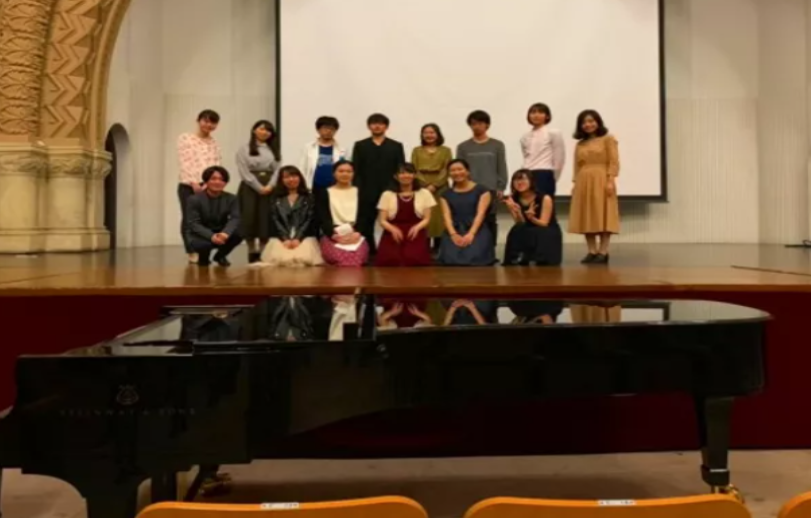
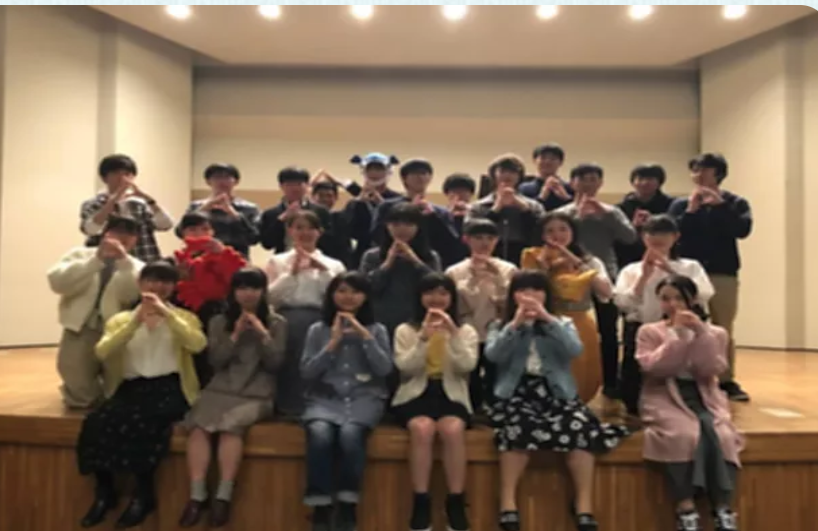

NOPIA東京外国語大ピアノサークル イタリア語で「ゆっくり、ゆっくりと」の意味を持つ言葉 "piano piano"から生まれたNOPIA東京外大ピアノサークルです。 のんびりとした温かい雰囲気で、仲良く音楽を楽しんでいます。 是非演奏をお楽しみ下さい。
東京医科歯科大学ピアノの会 こんにちは！当ピアノの会は普段学外のホールや大学附属病院、 チャリティイベント等で演奏させて頂いております。 今年も素敵なホールで演奏できることを皆楽しみにしています。 どうぞよろしくお願いします!
東大室内楽の会 東大室内楽の会は、その名の通り、東大生を中心にほのぼのと アンサンブルを組んで演奏するインカレサークルです。 今回の演奏会では当サークルからの出演者は少ないですが、 各々練習を頑張ってきました。楽しんでお聴き下さい。
電気通信大学ピアノの会 電通大ピアノの会です。今回は特にEmotionalな曲が揃いました。 コンピュータ漬けの生活のせいで脳がデジタル化されつつ ある我々ですが、1か0かでは表せない、 無限の個性が発揮されるよう頑張ります。
一橋ピアノ室内楽サークルScherzando 私たちScherzandoは、一橋大学内の兼松講堂にて 月三回ほど集まって楽しく活動しております。 また、月に一度程度の演奏会を通し、 各個人でも腕を磨いております。 本日はそんな私たちの熱のこもった演奏にご注目ください。
東京工業大学プラタナスの会 我々は東工大の音楽好きが集まった団体です。 小さな団体ゆえに、今回お誘い頂いたことは大変画期的なことで、 主催者並びに参加団体の皆様に感謝申し上げます。 来年も開催されることを心から願っております。
東京都立大学Dolce Dolceは今年で創部10周年を迎え、益々活動が盛んにになっています！ メンバー同士仲も良くアットホームなサークルで、 多様な演奏形態によるバラエティ豊かな演奏会が好評です。 夏の響演での熱い演奏をご期待下さい!!
